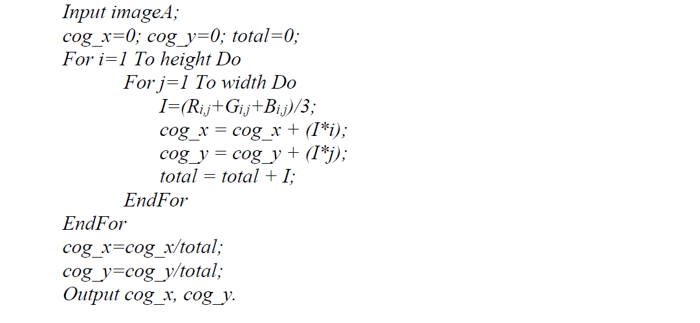
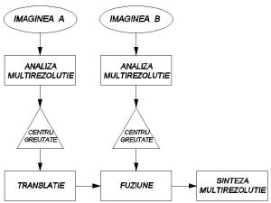
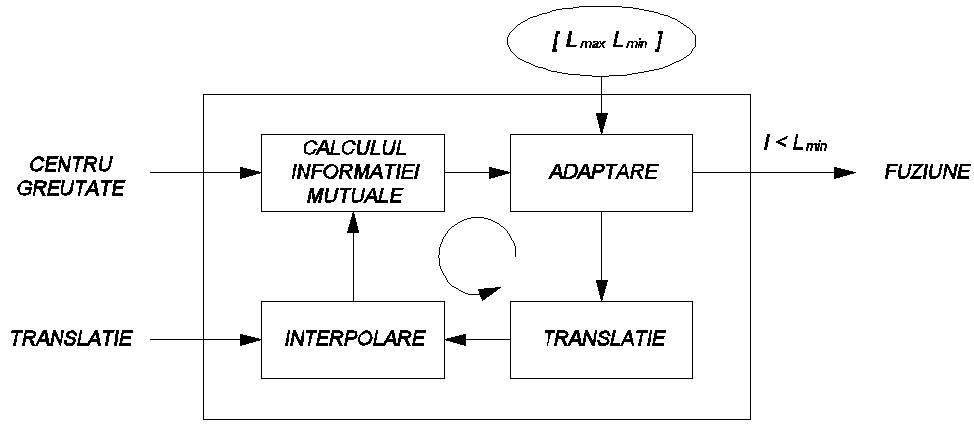
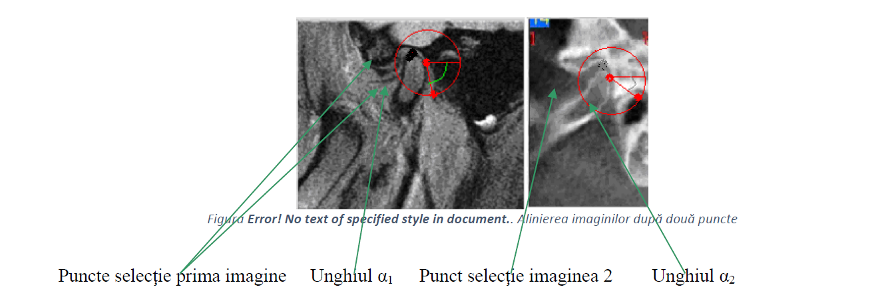

Data publicării: 15.04.2020
Autor articol: Mircea Vaida
1. Analiza cantitativă a rezultatului fuziunii
Scopul fuziunii de imagini este de a combina şi a păstra toate informaţiile vizuale importante provenite din imaginile de intrare într-o singură imagine de ieşire. În cele mai multe aplicaţii, calitatea imaginilor fuzionate este deosebit de importantă şi se face prin analiza vizuală subiectivă a interpretorului. Există mai multe metrici de calitate în fuziunea de imagini, cele mai multe utilizând o imagine referinţă cu care se va compara rezultatul obţinut. În cazul fuziunii imaginilor medicale de la mai multe modalităţi nu avem la dispoziţie o imagine de referinţă.
Printre modalităţile posibile de măsurare a calităţii imaginii fuzionate există următoarele metode: eroarea medie pătratică (mean square error MSE), raportul semnal-zgomot (SNR) ambele utile în cazul în care dispunem de imaginea ideală fuzionată faţă de care se va măsura deviaţia standard. În situaţiile practice, imaginea ideală nu este disponibilă. Astfel, se introduc doi parametri noi: factorul de fuziune (fusion factor FF) şi simetria de fuziune (fusion symmetry FS). Criteriul folosit pentru evaluarea calităţii fuziunii este criteriul informaţiei mutuale (mutual information MI). Informaţia mutuală reprezintă cantitatea de informaţie transformată din imaginea sursă în imaginea fuzionată.
Informaţia mutuală este un concept preluat din teoria transmiterii informaţiei, care măsoară dependenţa statistică între două variabile aleatoare, sau cu alte cuvinte cantitatea de informaţie pe care o conţine prima variabilă despre cea de-a doua. Considerăm două variabile aleatoare A si B cu distribuţiile marginale pA(a) respectiv pB(b) şi distribuţia comună (joint probability distribution) pAB (a,b). Informaţia mutuală măsoară dependenţa între cele două variabile aleatoare A şi B fiind definită astfel:
Se consideră a şi b ca fiind valorile intensităţilor corespunzătoare unei perechi de pixeli din prima respectiv a doua imagine. Distribuţiile marginale pA(a) respectiv pB(b) şi cea comună pAB (a,b) se obţin prin normalizarea histogramelor marginale şi comune ale celor două imagini care se poate calcula utilizând următorul set de formule, [Nava, 2007]:
unde h(a,b) este histograma comună. Aceasta este o histograma bidimensională construită prin selectarea unei caracteristici a pixelilor locali din cele două imagini. Fiecare intrare din histogramă corespunde intensităţii perechii de pixeli (x,y) din prima imagine, respectiv din a doua imagine. Valoarea stocată în histograma bidimensională va fi numărul de pixeli din imagine care vor avea intensităţile respective. Ca şi caracteristici locale se poate alege una dintre culori sau textura imaginii, densitatea de contururi, gradientul, etc.
Din ecuaţiile de mai sus se poate observa că dispunând doar de histograma comună putem determina MI între două imagini. Dacă vom considera două imagini de intrare A si B şi imaginea fuzionată F, putem calcula cantitatea de informaţie conţinută de F despre imaginile A, respectiv B cu formulele, [Wang, 2008], [Roshni, 2008]:
Măsura de performanţă a fuziunii, factorul de fuziune FF se defineşte ca, [Sasikala, 2007] :
Se presupune că există o dependenţă maximă între valorile de intensitate din imagini când acestea sunt aliniate corect, [Pluim, 2003]. O valoare mai mare a factorului de fuziune indică transferul unei cantităţi mai mari de informaţie de la imaginile sursă în imaginea fuzionată. Cu toate acestea, o valoare mare a FF nu poate indica şi dacă imaginile sursa au fost fuzionate simetric. In acest sens, s-a introdus conceptul denumit simetrie de fuziune (Fusion Symmetry FS), având următoarea formulă de calcul:
Cu cât FS este mai mic cu atât procesul de fuziune a fost mai bun. Factorul FF capătă o importanţă mai mare când unul din cei doi senzori este inferior. Dacă ambii senzori prezintă aceeaşi calitate, atunci parametrul FS trebuie luat în considerare şi se va alege pentru fuziune un algoritm cu un FS mai mic.
2. Contribuţii la fuziunea imaginilor medicale
Pentru fuzionarea imaginilor medicale s-a abordat fuziunea în domeniul transformării, folosind structurile piramidale şi transformata wavelet discretă. S-au implementat 2 aplicaţii în Java, una de sine stătătoare şi o aplicaţie web distribuită. S-a dorit implementarea unei aplicaţii web pentru a oferi posibilitatea suprapunerii imaginilor în vederea diagnosticării şi tratamentului din orice locaţie, la orice moment.
S-a aplicat tehnica de fuziune bazată pe corelaţie şi energie. După obţinerea coeficienţilor de transformare pentru cele 2 imagini, aceştia se reţin în 2 matrici bidimensionale. Imaginea rezultată în urma fuziunii se reţine de asemenea într-o matrice bidimensională, pe care o construim treptat astfel:
• La un singur nivel de descompunere imaginea se împarte în 4 părţi
• Pentru coeficienţii de aproximare, aplicăm criteriul “max-abs”, alegând coeficienţii cu valoare maximă dintre cei de aproximare şi îi depunem în matricea rezultat.
• Pentru a injecta corect detaliile de înaltă frecvenţă, coeficienţii de detaliu trebuie ponderaţi şi injectaţi în imaginea rezultată.
Se calculează următorii parametri:
– calculăm energia din fiecare imagine; s-a utilizat o fereastră glisantă de 2×2 pixeli, care parcurge imaginea de aproximare şi determină, energia conţinută în fereastră;
– determinăm coeficientul de corelaţie utilizând aceeaşi fereastră de 2×2 pixeli;
– se calculează α, care reprezintă factorul de ponderare al coeficienţilor de detaliu din fereastra glisantă. Pentru aceasta, matricea este parcursă pe cele 3 sferturi rămase şi, pentru fiecare pixel din imaginea de aproximare, vom pondera cei trei coeficienţi de detaliu corespunzători cu factorul α calculat. Valoarea lor se depune în matricea rezultat.
După ce s-a construit matricea, aplicăm transformata inversă, pentru a respecta etapele fuziunii imaginilor multirezoluţie. Din coeficienţii wavelet vom obţine imaginea fuzionată.
Alinierea imaginilor
Pentru a alinia două imagini de dimensiuni diferite, s-a optat pentru schema propusă în [Takita, 2002]. Este o metodă de aliniere “după-punct”, prin care se caută centrele de greutate ale celor două imagini, şi se încearcă maximizarea informaţiei mutuale. Alinierea se realizează după următorul algoritm:
1. se calculează centrele de greutate ale imaginilor, respectând pentru fiecare imagine paşii descrişi prin pseudocodul următor:

unde: – height, width – dimensiunile imaginii
– Ri,j, Gi,j, Bi,j – componentele de culoare din spaţiul RGB pentru fiecare pixel cu coordonatele (i,j)
– cog_x, cog_y – coordonatele centrului de greutate
– total reprezintă valoarea cu care normalizăm coordonatele centrului de greutate;
2. Se translatează imaginea de dimensiune mai mică peste imaginea de dimensiuni mai mari, căutându-se suprapunerea exactă a centrelor de greutate.
3. În continuare, se realizează fuziunea după una din cele 3 metode prezentate: selecţie maxim, choose-max sau B&K.

Figura 1 prezintă schematic algoritmul prezentat. Pentru rezultate mai bune se poate aplica o schemă de optimizare. O schemă posibilă este cea prezentată în Figura 2, o adaptare a celei propuse în [Tang, 2006], în care se încearcă deplasarea centrului de greutate în sensul maximizării informaţiei mutuale. Asupra unei imagini se poate aplica o translaţie, urmată de o interpolare pentru determinarea intensităţilor pixelilor situaţi la coordonate neîntregi. Se calculează informaţia mutuală între cele 2 imagini. În blocul de adaptare se modifică parametri transformării cu un pas Lmax în sensul maximizării informaţiei mutuale şi se realizează din nou translaţia cu aceşti parametri. Procesul se termină când pasul actual este <Lmin.

În multe aplicaţii de aliniere a imaginilor, această operaţie se realizează utilizând marcatori externi. Există însă cazuri în care se doreşte alinierea şi fuziunea imaginilor care nu au fost achiziţionate în acest scop şi nu prezintă astfel de marcatori. Pentru aceste cazuri este necesară aplicarea altor metode de aliniere.
În cazul în care imaginile de fuzionat sunt de dimensiuni diferite, dar au aceeaşi orientare (nu sunt rotite una în raport cu cealaltă) se poate stabili interactiv un punct comun pe cele 2 imagini, apoi se deplasează una în raport cu cealaltă, astfel încât punctele să se suprapună. Această metodă a fost testată pe două imagini.
În cazul în care este necesară alinierea imaginilor şi una din imagini este deplasată şi rotită în raport cu cealaltă, un singur punct de selecţie nu este suficient. Pentru acest caz propunem selecţia a două puncte de pe fiecare imagine. Este destul de dificil pentru un utilizator, să selecteze câte două puncte de pe fiecare imagine, care să fie la exact aceeaşi distanţă în cele 2 imagini. De aceea, propunem metoda următoare:
1. se selectează două puncte de pe o imagine şi unul singur punct de pe cealaltă.
2. se deplasează imaginea 2 astfel încât primele puncte selectate pe fiecare imagine să coincidă
3. se calculează distanţa dintre cele 2 puncte de pe prima imagine “d” şi unghiul format de dreapta formată cu axa OX, “α1”
4. se afişează automat pe cea de a doua imagine un cerc cu centrul în punctul selectat pe aceasta şi raza egală cu “d”.
5. se selectează al 2-lea punct pe a doua imagine, ajutându-ne de cercul trasat
6. se determină unghiul format de dreapta obţinută pe a doua imagine cu axa OX, “α2”
7. se roteşte imaginea 2 cu unghiul α1- α2 în jurul punctului selectat

3. Concluzii
In procesul de fuziune medicala exista diferite modalităţi posibile de măsurare a calităţii imaginii fuzionate care sunt tratate in raport. Sunt apoi prezentate sintetic principalele contributii aduse in domenuiul fuziunii imaginilor medicale.
Bibliografie extensiva imagistica medicala
1. [Aiazzi, 2008] – B. Aiazzi, S. Baronti, M. Selva, “Image fusion through multiresolution oversampled decompositions”, ”Image fusion, Algorithms and applications”, Elsevier Academic Press, 2008, pag. 27-66
2. [Ackerman, 2002] – M. Ackerman, R. Craft, F. Ferrante, M. Kratz, S. Mandil, H. Sapci, “Telemedicine Technology”, Telemedicine Journal and e-Health, Volume 8, Number 1, 2002, pag. 71-78
3. [Analyze, 2009] – http://www.mayo.edu/bir/Software/Analyze/Analyze.html
4. [Angenent, 2006] -S. Angenent, E. Pichon, A. Tannenbaum, “Mathematical methods in image processing”, Bulletin of The American Mathematical Society, Volume 43, Number 3, July 2006, pag. 365–396
5. [Artaechevarria, 2009] – Artaechevarria X, Munoz-Barrutia A, Ortiz-de-Solorzano C., “Combination strategies în multi-atlas image segmentation: application to brain MR data”, IEEE Trans Med Imaging 2009, 28(8):1266-77. Epub 2009 Feb 18.
6. [Arthur, 2007] – D. Arthur, S. Vassilvitskii, “k-means++ The Advantages of Careful Seeding”, 2007 Symposium on Discrete Algorithms (SODA), pag. 1027-1035
7. [BeyondView, 2009] – site BeyondView, http://www.commvantage.com/BeyondView.html
8. [Bhaskaran, 1999] – V. Bhaskaran, K. Konstantinides, “Image and Video Compression Standards – Algorithms and Architectures”, Second Edition, Kluwer Academic Publisher, 1999
9. [Bruce, 2003] – R. Bruce, “RIS/PACS integration – what is it and what are its benefits?”, 2003, http://www.openmedtech.com/images/RIS.htm
10. [Cala, 2003] – J. Cala, L. Czekierda, “TeleDICOM – environment for collaborative medical consultations”, International Conference on e-Health in Common Europe, Cracovia, 2003, pag.307-322
11. [Cao, 2008] – Hua Cao, “A Novel Automated Approach of Multi-Modality Retinal Image Registration and Fusion”, Phd. Thesis, 2008, LSU Electronic Thesis and Dissertation Archive
12. [Chan, 1990] – H.P. Chan et al., “Improvements in Radiologists’ Detection of Clustered Microcalcifications on Mammograms: The Potential of Computer-Aided Diagnosis,” Investigative Radiology, vol. 25, pag. 1,102-1,110, 1990
13. [Chang, 1987] – S.-K. Chang, Q.-Y. Shi, C.-W. Yan, “Iconic Indexing by 2-D Strings”, IEEE Trans. on Patt.Anal. and Mach. Intell., May 1987, pag. 413–428
14. [Chen, 2000] – Zhe Chen, Xiaomei Yu, David Feng, “A Telemedicine System over the Internet”, ACM International Conference Proceedings Series, Vol. 9, Selected papes for Pan-Sydney Workshop on Visual Information Processing, Visualisation 2000, Conferences in Research and Practice in Information Technology, Vol. 2, pag. 113-118
15. [ChioreanRef1, 2004] – Chiorean Ligia, “Studiul actual al cercetărilor în imagistica medicală şi aplicaţii în telediagnostic”, Referat doctorat, martie 2004
16. [ChioreanRef2, 2006] – Chiorean Ligia, “Metode si algoritmi de codare, indexare si cautare a imaginilor medicale cu aplicatii in telediagnostic”, Referat doctorat, martie 2006
17. [ChioreanRef3, 2006] – Chiorean Ligia, “Sisteme de stocare, manipulare şi management a imaginilor multimedia în telemedicină”, Referat doctorat, septembrie 2006
18. [Chiorean09a, 2009] – Ligia Chiorean, Mircea-Florin Vaida, “3D Rendering of Radiological Images using Java Secure Technologies”, MediTech2009, 27-29th September, IFMBE Proceedings 26, pag. 257-260, indexat Springer, Cluj-Napoca, ROMANIA
19. [Chiorean09b, 2009] – Ligia Chiorean, Mircea-Florin Vaida, “Medical Image Fusion Based on Discrete Wavelet Transform Using Java Technology”, ITI 2009, June 22-25 2009, Cavtat, Croatia, pag. 55-60
20. [Chiorean09c, 2009] – Ligia Chiorean, Mircea-Florin Vaida, Loreta Suta, “A Medical Image Fusion Method For Web Distributed Applications”, Journal Acta Tehnica Napocensis Electronics and Telecommunications, Volume 50, Number 3, Cluj-Napoca, 2009, pag. 31-37.
21. [Chiorean09d, 2009] – Ligia Chiorean, Mircea-Florin Vaida, Loreta Suta, “Web distributed secure application using a medical image fusion method”, Distributed Environments. Adaptability, Semantics and Security Issues, International Romanian-French Workshop, 17-18 September 2009, Cluj-Napoca, U.T. Press, pag. 138-148
22. [Chiorean07a, 2007] – Ligia Chiorean, Mircea-Florin Vaida, Iulian Benta, “Using a multimedia database for tele-diagnosis and alternative tele-education methods”, 1st International Conference on Advancements of Medicine and Health Care through Technology, MediTech2007, 27-29th September, 2007, Cluj-Napoca, ROMANIA, Journal Acta Electrotehnica, Vol. 48, No. 4, pag. 69-74
23. [Chiorean07b, 2007] – Ligia Chiorean, Aron Sipos, Mircea-Florin Vaida, “Content Based Medical Image Retrieval Using Oracle Intermedia”, Journal Acta Tehnica Napocensis Electronics and Telecommunications, Cluj-Napoca, Vol. 48, No.1, 2007, pag. 7-12
24. [Chiorean07c, 2007] – Ligia Chiorean, Aron Sipos, Mircea-Florin Vaida, Tatiana Hodorogea – “Technical education for medical specialists to use a multimedia database”, 8 th International Carpathian Control Conference ICCC’2007, Štrbské Pleso, Slovak Republic, May 24-27, 2007, pag. 207-210
25. [Chiorean07d, 2007] -Ligia Chiorean, Aron Sipos, Mircea-Florin Vaida, “Radiology database images retrieving”, ISSCS 2007, Iasi 2007, Vol. 1, pag. 213-216
26. [Chiorean05, 2005] – Ligia Chiorean, Mircea-Florin Vaida, Cosmin Striletchi, “DNA Analysis Using Densitometry Facilities”, VERIFICATORI BIOMETRICI Workshop 26-27 mai 2005, Cluj-Napoca, pag. 169-174
27. [Choras, 2007]- R. S. Choras, “Content-Based Image Retrieval – A Survey”, Biometrics, Computer Security Systems and Artificial Intelligence Applications, Springer US 2007, pag. 31-44
28. [Chunming, 2008] – “Chunming Li, Rui Huang, Zhaohua Ding, Chris Gatenby, Dimitris Metaxas, John Gore, ”A Variational Level Set Approach to Segmentation and Bias Correction of Images with Intensity Inhomogeneity, Medical Image Computing and Computer-Assisted Intervention – MICCAI 2008 , Volume 5242/2008, pag. 1083-1091
29. [Cisco, 2009] – CISCO Systems, “Making most of PACS through a CISCO medical-grade network”, http://www.cisco.com/web/strategy/docs/healthcare/eradiology_PACS.pdf
30. [Clements, 2008] – Robert J. Clements and James L. Blank, “A Stereoscopic Volume Rendered Brain Atlas”, Brains, Minds and Media Journal,Vol. 3, Number 2, 2008, DIPP NRW urn:nbn:de:0009-3-15126
31. [Clendenon, 2002] – J. L. Clendenon, C. L. Phillips, R. M. Sandoval, S. Fang, K. W. Dunn, “Voxx: a PC-based, near real-time volume rendering system for biological microscopy”, Am J Physiol Cell Physiol, 2002, pag. 213-218
32. [Cohen, 1993] – L.D. Cohen, I. Cohen, “Finite-Element Methods for Active Contour Models and Balloons for 2D and 3D Images,” IEEE Trans. Pattern Analysis and Machine Intelligence, vol. 15, no. 11, 1993, pag. 1.131-1.147
33. [Colchester, 1996] – A. Colchester, J. Zhao, K. Holton-Tainter, C. Henri, N. Maitland, P. Roberts, C. Harris, R. Evans., “Development and Preliminary Evaluation of VISLAN, A Surgical Planning and Guidance System Using Intra-Operative Video Imaging,” Medical Image Analysis, vol. 1, no. 1, 1996, pag. 73-90
34. [Cong, 2009] – Vu Cong, Huynh Quang Linh, “3D Medical Image Reconstruction”, http://www.docstoc.com/docs/6530644/Of-3D-Medical-Images
35. [da Silva, 2009] – Claudio Antonio da Silva, Roberto de Beauclair Seixas, “Automated Contour Detection with Surface Generation on Volumetric Datasets”, http://w3.impa.br/~rbs/pdf/bte.pdf,
36. [Das, 2007] – Asha Das, K. Revathy, “A Comparative Analysis of Image Fusion Techniques for Remote Sensed Images”, Proceedings of the World Congress on Engineering 2007, vol. 1, pag. 639-644
37. [3D Doctor, 2009] – site 3D Doctor- www.ablesw.com/3d-doctor/index.html
38. [3dMD, 2009] – site 3DMD – http://www.3dmd.com/
39. [3DView, 2009] – site 3DViewNIX – http://www.mipg.upenn.edu/Vnews/index.html
40. [Dogan, 2004] – S. Dogan, “3d reconstruction and evaluation of tissues by using ct, mr slices and digital images”, ISPRS Congress Istanbul, 2004, pag.323-328
41. [Dolgovesov, 2005] – B.S. Dolgovesov, M.Y. Shevts, “Real-Time Volume Rendering Systems”, ACIT Software Engineering 2005, VolumePro1000, pag. 104-107
42. [Dubois, 2005] – J. P. Dubois, H. M. Chiu, “High Speed Video Transmission for Telemedicine using ATM Technology”, World Academy of Science, Engineering and Technology 12/ 2005, IEC Prague 2005, pag. 357-361
43. [Duncan, 2000] – J.S. Duncan, N.Ayache, “Medical Image Analysis: Progress over Two Decades and the Challenges Ahead”, IEEE Transaction of Pattern Analysis and Machine Inteligence, vol 22, no.1, 2000, pag.85-106
44. [Ehrhardt, 2004] – Ehrhardt J, Handels H, Plötz W, Pöppl SJ., “Atlas-based recognition of anatomical structures and landmarks and the automatic computation of orthopedic parameters”, Methods Inf Med. 2004; 43(4):391-397. PMID: 15472752
45. [Escott, 2003] – Edward J. Escott, David Rubinstein, “Free DICOM Image Viewing and Processing Software for Your Desktop Computer: What’s Available and What It Can Do for You”, RadioGraphics 2003, pag. 1341-1357
46. [Felipe, 2003] – J. C. Felipe, A. Caetano Traina, “Retrieval by Content of Medical Images Using Texture for Tissue Identification”, CBMS, IEEE Computer Society (2003), pag. 175-180
47. [Fillard, 2004] – P. Fillard, J.-C. Souplet, N. Toussaint, “SepINRIA: A Free Software to analyze Multiple Sclerosis Brain MRI, Tutorial for SepINRIA v1.7.0”, INRIA Sophia Antipolis – Research Project ASCLEPIOS, 2004
48. [Foos, 2000] – D.Foos, E. Muka, R.M.Slone, B.J.Erickson, M.J.Flynn, D.A.Clunie, L. Hidebrand, K. Kohm, S. Young, “JPEG2000 compression of medical imagery”, Proceeding of SPIE vol. 3980, PACS Design and Evaluation: Engineering and Clinical Issues, ed. G. Blaine, E. Siegel, Feb. 2000, pag. 85-96
49. [Fundeni, 2002] – http://e-medicina.ro/documents_folder/semi-private/tele2.pdf,
50. [Gateway, 2009] – site UltraGATEWAY, http://www.ultraradcorp.com/gateway.htm
51. [Glatard, 2004] -T. Glatard, J. Montagnat, J.E. Magnin, “Texture based medical image indexing and retrieval: applications to cardiac imaging”, Proceedings of ACM Multimedia 2004 Workshop on Multimedia Information Retrieval (MIR) NY 2004, pag. 135-142
52. [Guihong, 2001] – Q. Guihong, Z. Dali, Y. Pingfan, “Medical image fusion by wavelet transform modulus maxima”, OPTICS EXPRESS, Vol. 9, No. 4 , 2001, pag. 184-190
53. [h3d, 2009] – site H3D API- http://www.h3dapi.org/
54. [Handels, 2007] – Handels H, Werner R, Schmidt R, Frenzel T, Lu W, Low D, Ehrhardt J., “4D medical image computing and visualization of lung tumor mobility in spatio-temporal CT image data.”, Int J Med Inform. 2007 Dec;76 Suppl 3:S433-9. Epub 2007 Jul 2.
55. [Haralick, 1973] – R. M. Haralick, K. ShanMugam, I. Dinstein, “Textural features for image classification”, IEEE Transaction on Systems, Man and Cybernetics, vol. SMC-3, Nr. 6, 1973, pag. 610-621
56. [HealthOptimum, 2007] – site proiect HEALTH OPTIMUM, http://www.healthoptimum.info
57. [Heckbert, 1986] – Paul S. Heckbert, “Survey of Texture Mapping”, IEEE Computer Graphics and Applications, November, 1986, pag. 56-67.
58. [Hill, 2002] – P. Hill, N. Canagarajah, D. Bull, “Image Fusion using ComplexWavelets”, BMVC 2002, pag. 487-496
59. [Hsu, 1998] – E. W. Hsu, A. L. Muzikant, S. A. Matulevicius, R. C. Penland, C. S. Henriquez, ” Magnetic resonance myocardial fiber-orientation mapping with direct histological correlation”, Am J Physiol Heart Circ Physiol 274: H1627-H1634, 1998; Vol. 274, pag. 1627-1634
60. [Huang, 2002] – H.K. Huang, “Medical Image Management in Healtcare Enterprise”, Technology & Application: Global Health Care Issue, Vol 3, pag. 84 – 88
61. [Iancu, 2005] – Sorana Iancu, “Manualul utilizatorului platformei Ecodis”, proiect EcoDis 2005, http://www.mediclass.org/ecodis/help/manual_ecodis.pdf
62. [Imco, 2006] – site Imco, http://www.imco-tech.com
63. [InterMedia, 2007] – Oracle® interMedia User’s Guide 10g Release 2 – Content-Based Retrieval Concepts, http://youngcow.net/doc/oracle10g/appdev.102/b14302/ch_cbr.htm
64. [Jackman, 2009] – Michael W. Jackman, Kodak Health Imaging Group, “A Digital Imaging Transformation In Radiology Departments”,
http://www.hctproject.com/content/PDF/HCT2_wp_jackman.pdf
65. [Kagadis, 2002] – George C. Kagadis, “Design and Implementation of algorithms for medical image registration and fusion”, Phd. Thesis, 2002, Patras, http://nemertes.lis.upatras.gr/dspace/bitstream/123456789/kagadis_thesis.pdf
66. [Kirankumar, 2007] – Y. Kirankumar, D.S. Shenbaga, “Transform-based medical image fusion”, Int. J. Biomedical Engineering and Technology, Vol. 1, No. 1, 2007, pag. 101-110
67. [Kitware, 2009] – Kitware Source, Software Developer Quarterly, Issue 8, Jan. 2009, newsletter, http://kitware.com/products/archive/kitware_quarterly0109.pdf
68. [Klein, 2007] – Stefan Klein, Marius Staring, Josien P. W. Pluim, “Evaluation of Optimization Methods for Nonrigid Medical Image Registration Using Mutual Information and B-Splines”, IEEE Transactions On Image Processing, Vol. 16, No. 12, December 2007
69. [Konstantinidis, 2005] – K. Konstantinidis, A. Gasteratos, I. Andreadis, “Image retrieval based on fuzzy color histogram processing”, Optics Communications 248, 2005, pag. 375–386
70. [Kostomanolakis, 1993] – S. Kostomanolakis, M. Lourakis, C. Chronaki, J. Kavaklis, S.C. Orphanoudakis, “The architecture of a System for the Indexing of Images by Content”, Proceedings of CAR’ 93, Springer- Verlang, 1993, pag. 278-282
71. [Kugean, 2002] -C. Kugean, S.M. Krishnan, S.M. Clautatape, O. Swarninathan, S. Srinivaran, N.Wang, ”Design of a mobile telemedicine system with wireless LAN”, Circuits and Systems, 2002, APCCAS’02, Vol.1, pag. 316-316
72. [Kung, 1994] – M. F. Kung, K. H. Fung, “Three-dimensional CT reconstruction: local
experience”, J Hong Kong Med Assoc., Vol 46, Nr1, 1994, pag. 81-87
73. [Lai, 2009]- Chih-Chin Lai, Chuan-Yu Chang, “A hierarchical evolutionary algorithm for automatic medical image segmentation”, Expert Systems with Applications Journal, Volume 36, Issue 1, January 2009, pag. 248-259
74. [LeadTool, 2006] – site LeadTool, http://www.leadtools.com
75. [Levoy, 1990] – Marc Levoy, Henry Fuchs, Stephen M. Pizer, Julian Rosenman, Edward L. Chaney, George W. Sherouse, Victoria Interrante1, Jeffrey Kiel4, “Volume Rendering in Radiation Treatment Planning”, Proc. First Conference on Visualization in Biomedical Computing, IEEE Computer Society Press, May 1990, pag. 4-10
76. [Lewis, 2007] – J.J. Lewis, R.J. O’Callaghan, S. G. Nikolov, D. R. Bull, C.N. Canagarajah, “Pixel- and region-based Image fusion Using Complex Wavelets”, Information Fusion, volume 8, 2007, pag. 119-130
77. [Lorensen, 1987] – W.E.Lorensen, H.E.Cline, “Marching Cubes: A High Resolution 3D Surface Construction Algorithm”, Computer Graphics 21(4), 1987, ACM Siggraph Computer Graphics, Vol. 21, pag. 163-169
78. [Maintz, 1998] – J. B. Antoine Maintz, Max A. Viergever, “A survey of medical image registration,” Medical Image Analysis 2(1) 1998, pag. 1-36
79. [Martelli, 1976] – A.Martelli, “An application of heuristic search methods to edge and contour detection,” Comm. ACM, vol. 19, 1976, pag. 73-83
80. [Matsopoulos, 2001] – G. K. Matsopoulos, K. K. Delibasis, N. A. Mouravliansky, “Medical Image Registration and Fusion Techniques: A Review“, Advanced Signal Processing Handbook, CRC Press LLC, 2001, pag. 19.1-19.30
81. [Matter, 1996]- C. Matter, E. Nagel, M. Stuber, P. Boesiger, O. M. Hess, “Assessment of systolic and diastolic LV function by MR myocardial tagging”, Basic Research in Cardiology, Vol. 91, 1996
82. [Maulik, 2009] – U. Maulik, “Medical Image Segmentation Using Genetic Algorithms”, IEEE Transactions on Information Technology in Biomedicine, vol. 13, Issue 2, March 2009, pag. 166-173
83. [Medic4you, 2008] – site Medic4you, http://orange.medic4all.it/telemedicina.html
84. [Meijering, 1999] – E. Meijering, W. Niessen, M. Viergever, “Retrospective Motion Correction in Digital Subtractive Angiography: A Review,” IEEE Trans. Medical Imaging, vol. 18, no. 1, pag. 2-21, 1999
85. [Meißner, 2002] -M. Meißner, U. Kanus, G. Wetekam, J. Hirche, A. Ehlert, W. Straßery M. Doggettz, P. Forthmann, R. Proks, “VIZARD II: A Reconfigurable Interactive Volume Rendering System”, Graphics Hardware 2002, pag. 1–1
86. [Mitianoudis, 2008] – N. Mitianoudis, T. Stathaki, “Image fusion schemes using ICA bases”, ”Image fusion, Algorithms and applications”, Elsevier Academic Press, 2008, pag. 85- 118.
87. [Mlsna, 2004] -P.A. Mlsna, N.M. Sirakov, “Intelligent Shape Feature Extraction and Indexing for Efficient Content-Based Medical Image Retrieval”, Image Analysis and Interpretation 2004. 6th IEEE Southwest Symposium, pag. 172-176
88. [Mroz, 2000] – L.Mroz, H.Hauser, E. Groller, “Interactive High Quality Maximum Intensity Projection”, Computer Graphics Forum, 2000, Vol. 19, Nr.3, pag. 341-350
89. [Mueller, 1999] – K. Mueller, N. Shareef, J. Huang, R. Crawfis, “High-Quality Splatting on Rectilinear Grids with Efficient Culling of Occluded Voxels”, IEEE Transactions on Visualization and Computer Graphics, 5(2), 1999, pag. 116-134
90. [Müler, 2004] – H. Müler, N. Michoux, D. Bandon, A. Geissbuhler, “A Review of Content-Based Image retrieval Systems in Medical Applications – Clinical Benefits and Future Directions”, International Journal of Medical Information vol. 73 (1) (2004), pag. 1–23
91. [Nava, 2007] – R. Nava, B. Escalante-Ramirez, G. Cristobal, “Mutual information Improves image fusion quality assessments”, Scientific Literature Digital Library SPIE Newsroom, 2007 DOI: 10.1117/2.1200708.0824
92. [Nema, 2009] – site Nema, http://medical.nema.org
93. [Olowoyeye, 2009] – Adebayo Olowoyeye , Mihran Tuceryan, Shiaofen Fang, “Medical volume segmentation using bank of Gabor filters”, Symposium on Applied Computing Proceedings of the 2009 ACM symposium on Applied Computing, SESSION: Computer application in health care track, 2009, pag. 826-829
94. [Oosterwijk, 2000] – Herman Oosterwijk – “DICOM Basics”, OTech Inc., Cap Gemini&Young, 2000
95. [Oosterwijk, 2004] – Herman Oosterwijk, “The DICOM standard, overview and characteristics”, http://www.ringholm.de/docs
96. [Orza, 2005] – B.Orza, V. Mihalcea, M. Hedeşiu, Ligia Chiorean, A. Vlaicu, Gr. Baciut, M Baciut, V. Cernea, S. Albu, “Teleoraltum – Sistem informatic integrat de monitorizare a tumorilor maligne oro-maxilo-faciale”, Conferinţa Română de Radiologie Orală şi Maxilofacială, Cluj-Napoca, 2005, pag. 47-48
97. [Pantelis, 2004] – G. Pantelis, B. Konstantinos, G. Harris, S. Konstantinos, T. Sapal, D. Nikolaos, C. Dionisis, “ A PDA-based Teleradiology System”, 1st IC-SCCE, Atena, 2004, pag 3090 – 3093
98. [Pelski, 2002] – Sue Pelski – Oracle interMedia Java Classes User’s Guide and Reference, Release 9.2, Oracle Corporation
99. [Pelski, 2003] – Sue Pelski -Oracle® Application Server 10g Multimedia Tag Library for JSP User’s Guide and Reference 10g
100. [Pianykh, 2008] – Oleg S. Pianykh, “Digital Imaging and Communications in Medicine (DICOM), A Practical Introduction and Survival Guide”, 2008 Springer-Verlag Berlin Heidelberg
101. [Pietrzyk, 2001] – Uwe Pietrzyk, “Registration of MRI and PET Images for clinical Applications”, Medical Image Registration. Edited by Joseph V. Hajnal, Derek lg Hill, and David J. Hawkes. CRC Press, Boca Raton, 2001
102. [Pinnamaneni, 2002] – Pujita Pinnamaneni, Sagar Saladi, Joerg Meyer, “Remote Transformation and Local 3-D Reconstruction and Visualization of Biomedical Data Sets in Java3D”, Proceedings of Electronic Imaging Science & Technology Visualization and Data Analysis Conference, 2002, pag. 44-54
103. [Pluim, 2003] – Josien P. W. Pluim, J. B. Antoine Maintz, Max A. Viergever, “Mutual information based registration of medical images: a survey”, IEEE Transactions on medical imaging, 2003, Vol. 22, Nr. 8, pag. 986-1004
104. [Polyxronopoulou, 2005] – Evgenia Polyxronopoulou, Antonis Daskalakis, Pantelis Georgiadis, Kostas Sidiropoulos, Dimitris Glotsos, Panagiota Ravazoula, George Nikiforidis, Dionisis Cavouras, “Development Of A Telemedicine Image Processing And Transferring System Over A Wireless Computer Network”, 1st International Conference on Experiments/Process/System Modelling/Simulation/Optimization, 1st IC-EpsMsO, Athens, 6-9 July, 2005, CiteSeerX – Scientific Literature Digital Library DOI: 10.1.1.108.9283
105. [Rajapakse, 1998] – Jagath C. Rajapakse, Frithjof Kruggel, “Segmentation of MR images with intensity inhomogeneities”, Image and Vision Computing, Volume 16, Issue 3, 16 March 1998, pag. 165-180
106. [Rangarajan, 1997] – A. Rangarajan, H. Chui, E. Mjolsness, S. Pappu, L. Davachi, P. Goldman-Rakic, J. Duncan., “A Robust Point Matching Algorithm for Autoradiograph Alignment,” Medical Image Analysis, vol. 4, no. 1, 1997, pag. 379-398
107. [Rarău, 2008] – A. E. Rarău, M. Cremene, K. I. Benţa, “Sisteme senzitive la context”, Ed. Albastra, 2008
108. [Ratib, 1997] – O.Ratib, “From PACS to the World Wide Web”, http://www.hon.ch/Library/papers/ratib.html
109. [Romedic, 2008] – http://www.romedic.ro/telemedicina-in-cardiologie-cu-spitale-din-anglia-si-grecia-0N7085
110. [Roshni, 2008] – Roshni Vs, K Revathy, “Using Mutual Information And Cross Correlation As Metrics For Registration Of Images”, Journal of Theoretical and Applied Information Technology, 2008, pag 474-481
111. [Sadjadi, 2005] – F. Sadjadi, “Comparative Image Fusion Analysis“, Computer Vision and Pattern Recognition – Workshops, 2005, CVPR Workshops, IEEE Computer Society Conference, pag.157 – 164
112. [Samcovic, 2003] – Andreja Samcovic, Zoran Bojkovic, Vedrană Milic-Rasic, “Telemedicine as a New Multimedia Services: Concepts and Advances”, Telsiks 2003, Vol.1, pag.399 – 402
113. [Sasikala, 2007] – M. Sasikala, N. Kumaravel, “A comparative Analysis of Feature Based Image Fusion Methods”, Information Technology Journal 6 (8), 2007 Asian Network for Scientific Information, pag. 1124-1230
114. [Schreibmann, 2008] Schreibmann E, Thorndyke B, Li T, Wang J, Xing L., “Four-dimensional image registration for image-guided radiotherapy”., Int J Radiat Oncol Biol Phys. 2008, 71(2):578-586. Epub 2008 Apr 18
115. [Schröder, 1996] – Peter Schröder, “Wavelets in Computer Graphics”, SIGGRAPH 96, 23rd International Conference in Computer Graphics and Interactive Techniques, New Orleans, curs
116. [Seidl, 2001] – T. Seidl, Hans-Peter Kriegel – “Adaptable Similarity Search in Large Image Databases”, State-of-the art in Content-Based Image and Video Retrieval, Kluwer Academic Publisher, Edited by R.C. Veltkamp, H. Burkhardt, H. Kriegel, 2001, pag. 297-319
117. [Shuai, 2008] – Jie Shuai, Jianyong Sun, Jianguo Zhang , “Novel multidimensional medical imaging using open source software”, SPIE Biomedical Optics & Medical Imaging, 2008, DOI: 10.1117/2.1200802.1032
118. [Shu-Long, 2002] – Zhu Shu-Long, “Image Fusion Using Wavelet Transform”, ISPRS Proceeding 2002, pag. 171 – 179.
119. [Skodras, 2000] – A.N. Skodras, C.A. Christopoulos, T. Ebrahimi, “JPEG2000: The Upcoming Still Image Compression Standard”, Proceedings of the 11th Portughese Conference on Pattern Recognition, Porto, Portugal, May 11th- 12th 2000, pag. 359-366
120. [Somaskandan, 2006] – Suthakar Somaskandan – “Visualization in 3D Medical Imaging”, Seminar at CBA Swedish, 2006
121. [Striletchi, 2005] – Cosmin Striletchi, Mircea-Florin Vaida, Ligia Chiorean, “Secured Medical Therapy Using Multimedia Technologies”, Inter-Ing 2005, 10-11 November, Tg. Mures, Romania, pag. 653-658
122. [Striletchi, 2008] – Cosmin Striletchi, Mircea-Florin Vaida, Ligia Chiorean, “On-line Processing
Facilities Considering a Multimedia Data Base and Security Elements”, ITI 2008, 23-26 June 2008, Cavtat, Croatia, pag. 251-256
123. [Szambal, 2009] – Sebastian Szambal, “Implementation of the Shear-Warp Algorithm”,
http://www.cg.tuwien.ac.at/courses/projekte/vis/finished/SZambal/basic.html
124. [Tagare, 1997] – H. D. Tagare, C. Jaffe, J. Duncan, “Medical Image Databases: A Content-based Retrieval Approach”, J Am Med Inform Assoc, Vol. 4, No. 3. 1997, pag. 184-198
125. [Takita, 2002] – N. Takita, H. UE, H. Haneishi, H. Toyama, N. Yamamoto, T. Miyamoto, Y. Mori, “Automatic and Rapid Image Registration between X-ray CT and SPECT Chest Images”, Japan HardCopy, 2002, pag. 477-478
126. [Tang, 2006] – L. Tang, G. Hamarneh, A. Celler, “Co-registration and fusion of CT and SPECT images using mutual information”, Vancouver Coastal Health Research Institute (VCHRI) 2006, poster
127. [Tenpet, 2006] – proiect TENPET ,
http://ec.europa.eu/information_society/events/ict_bio_2006/docs/concert-meet-projects/tenpet-w.pdf]
128. [Tsotsos, 1985] – J. Tsotsos, “Knowledge Organization and Its Role in Representation and Interpretation for Time-Varying Data: The ALVEN System,” Computational Intelligence, vol. 1, no. 1, pag. 16-32, Feb. 1985
129. [Udupa, 2000] – J.K. Udupa, G.T. Herman, “3-D Imaging in Medicine”, 2nd Edition, CRC Press LLC, 2000
130. [VisTools, 2009] – site VisTools, http://visservices.sdsc.edu/vistools/
131. [VolumePro, 2009] – site VolumePro, http://www.terarecon.com/products/vp_prod_med.htm
132. [VaidaP, 2002] – Mircea-Florin Vaida, Cosmin Porumb, Radu-Vasile Fotea, Florin-Radu Hurducas, Liviu Lazar – Java 2 Enterprise Edition (J2EE) Aplicatii multimedia, Ed. Albastra, 2002
133. [VaidaD, 2002] – Mircea-Florin Vaida, Jozsef Domokos, “Oracle9i in managing medical images and multimedia content”, IEEE- International Workshop, Trends and Recent Achievements in Information Technology, 16-18 May 2002, Cluj-Napoca, Romania, pag. 144 -151
134. [Vartziotis, 2006] – Dimitris Vartziotis, Alkis Poulis, Victor Faessler, Costas Vartziotis, Charis Kolios, “Integrated Digital Engineering Methodology for Virtual Orthopedics Surgery Planning”, ITAB 2006, Ioannina, Greece
135. [Viskom, 2004] – Miloš Šrámek Viskom, “The DICOM Standard”, lecture at Austrian Academy of Sciences
136. http://www.viskom.oeaw.ac.at/~milos/lecture/dicomb.pdf
137. [VisTools, 2009] – site VisTools -http://visservices.sdsc.edu/vistools/
138. [VTK, 2009] – site VTK – http://www.vtk.org/
139. [Vlaicu, 1997] – Aurel Vlaicu, “Prelucrarea digitala a imaginilor”, Editura Albastra, 1997
140. [Veltkamp, 2001] – Remco C. Veltkamp, Mirela Tanase, Danielle Sent, “Features in Content Based Image Retrieval Systems: A Survey”, “State-of-the-art in content-based image and video retrieval”, Ed. R. C. Veltkamp, Hans Burkhardt, Hans-Peter Kriegel, Kluwer Academic Publisher, 2001, pag 97-124
141. [Wang, 2008] – Qiang Wang, Yi Shen, Jing Jin, “Performance evaluation of image fusion techniques”, Image Fusion: Algorithms and Applications, Elsevier Academic Press, 2008
142. [Wei, 2006]- C.H.Wei, C.T. Li, R. Wilson, “Approach to Medical Database Retrieval”, Idea Group Inc., 2006
143. [Weili, 2009] – Shi Weili, Miao Yu, Chen Zhanfang, Zhang HongBiao, “Research of Automatic medical image segmentation algorithm based on Tsallis entropy and improved PCNN”, ICMA 2009, International Conference Mechatronics and Automation 2009, pag. 1004-1008
144. [Weisstein, 2009] – Eric Weisstein, “Cubic Spline.” From MathWorld–A Wolfram Web Resource, http://mathworld.wolfram.com/CubicSpline.html
145. [Westover, 1989] – L.Westover, “Interactive volume rendering”, CH Volume Visualization Workshop, 1989, pag. 9-18
146. [Wieclawek, 2009] – Wieclawek Wojciech, Rudzki Marcin, Czajkowska Joanna, “Live-wire Approach with FCM Clustering and Adaptive Filtering for Edge Detection in Medical Images”, 9th International Workshop, OWD, 17-20 October 2009, pag. 475-478.
147. [Zabulis, 2001] – X. Zabulis, S. C. Orphanoudakis, “Image Content Analysis and Description, State-of-the-Art in Content-Based Image and Video Retrieval”, Kluwer Academic Publisher, Edited by R.C. Veltkamp, H. Burkhardt, H. Kriegel, 2001, pag.1-21
148. [Zhang, 2009] – Jinyan Zhang, Xudong Lu, Hongchao Nie, Zhengxing Huang, W. M. P. van der Aalst, “Radiology information system: a workflow-based approach”, Int J CARS (2009) pag. 509–516